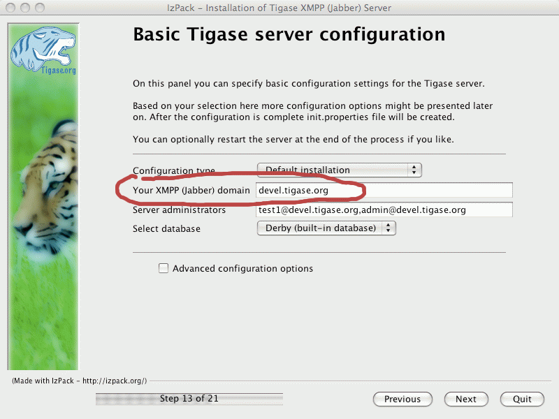

Artur Hefczyc <artur.hefczyc@tigase.net> v2.0, June 2014: Reformatted for AsciiDoc. :toc: :numbered: :website: http://tigase.net :Date: 2010-04-06 21:18
The Tigase server supports multiple virtual hosts for a single server installation. This is supported via VHostManager - the new Tigase server component added recently to the implementation. Virtual hosts can be added or removed, enabled or disabled at the server runtime without restarting the service or disrupting normal operation.
This document describes how virtual hosts work in the Tigase server and how to take the most of this feature in your installation.
The simplest and default way to set virtual hosts is the server configuration. You can either edit manually the ////<<initPropertiesGuide,////init.properties file or use the graphical installer/configuration program to set the property. If you want to edit it manually search for '--virt-hosts' property for more detailed description.
Alternatively you can use the GUI installer as shown below to set a list of virtual hosts.

This method however has many disadvantages. It requires the server restart after each change, the configuration file is not the best place to store long list of virtual domains and you can not actually set any additional parameters for the domain other than it does exist or not.
There is another way to store and control virtual domains in the Tigase server. They can be put in the database and managed using ad-hoc commands. List of domains can be modified outside the Tigase server through any third-party system or web application and the server reloads the list of when received VHOSTS_RELOAD ad-hoc command.
There are 2 more ad-hoc commands which allow you to add/update and remove virtual hosts via XMPP protocol:
By default, both commands cause vhosts list update in the permanent repository. This is however VHostRepository implementation dependent feature and can be changed in your repository implementation.
Commands for virtual domains management can be executed using any XMPP client with a good support for service discovery and ad-hoc commands, for example Psi. Commands are accepted only when they are sent by the service administrator.
Please refer to documents listed below for more detailed information on the following topics: